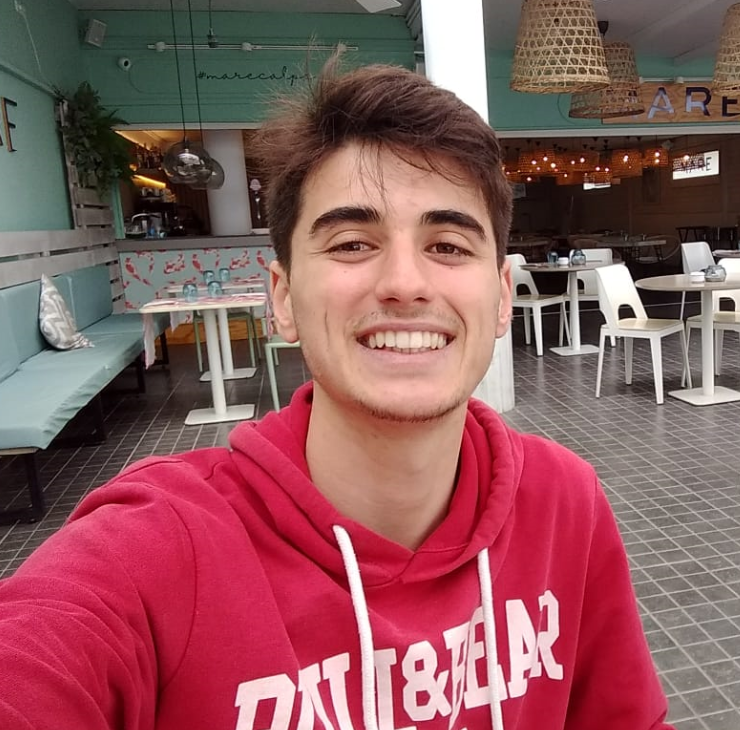

Algunas cosas sobre mí
¡Hola! soy Iñaki Santos y tengo 18 años, soy estudiante del IES Pere Maria Orts i Bosch. Actualmente estudio 1º de DAW (Desarrollo de Aplicaciones Web).
Tengo la titulación de grado medio de SMX (Sistemas microinformáticos y redes). Vivo en Calpe / Alicante y estudié la E.S.O. allí en el IES Ifach.
Me gusta la programación , tanto html como JavaScript y CSS. También, me llaman la atención otros lenguajes distintos como Java o Python. Actualmente, estoy aprendiendo Java, con Python si que he hecho algunos programas sencillos (nivel usuario).
Soy fanático del deporte. Practico fútbol sala en mi pueblo (Calpe), y me gusta el boxeo. Practico cualquier otro tipo de deporte en mi tiempo libre. ¡Me encanta!
Me puedes encontrar aquí:
En mi primer curso de Grado Medio mis compañeros Salvador Bertomeu y Alejandro Valero hicimos un proyecto sobre el Internet de las cosas. Puedes verlo aquí y aquí.
Utilizábamos una herramienta de Cisco llamada Cisco Spark. Esta sirve para enviar mensajes automáticos y remotos, Cisco Spark es muy interesante ya que se puede utilizar en varios campos de la informática como la domótica o el control de procesos.
Todavía no tengo blog, pero es una cuestión que me estoy planteando. Si en un futuro tengo un blog este párrafo estará destinado a contener la información de este.
También cabe destacar que este sitio web es meramente informativo o para darme a conocer. No tengo ninguna intención de recibir ningún tipo de retribución ya sea con anuncios o con cualquier otro tipo de propaganda.
Los interesados pueden enviarme consultas, preguntas o incluso feedback de la página en las pestañas de contacto y de preguntas.